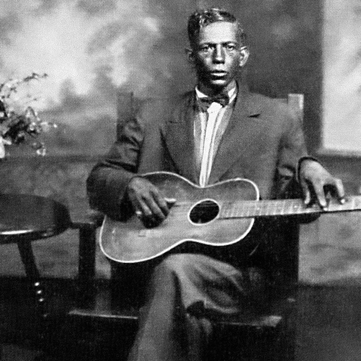
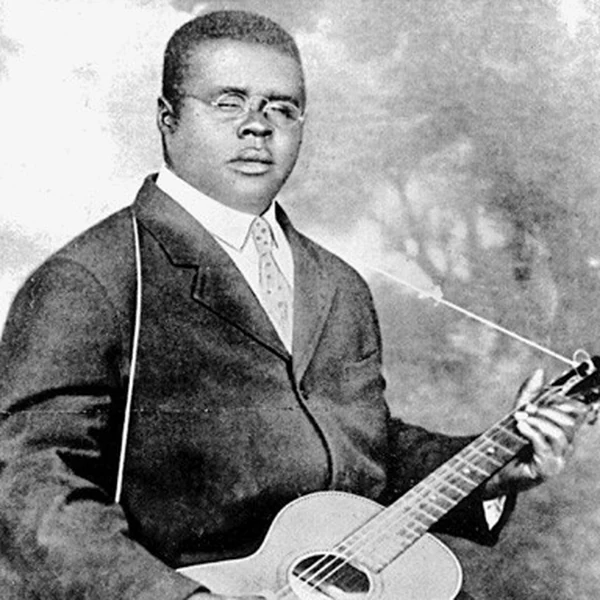
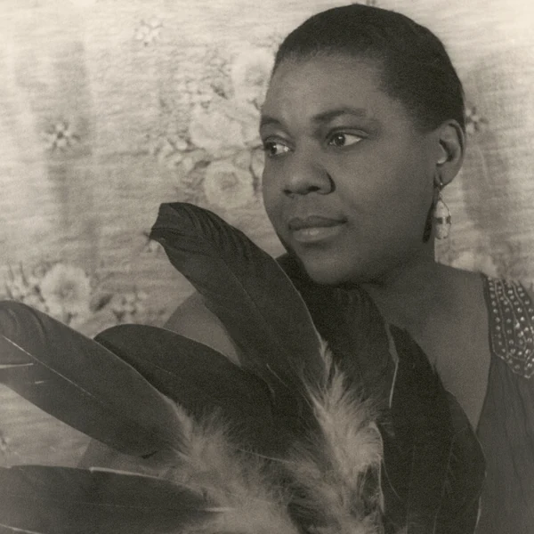
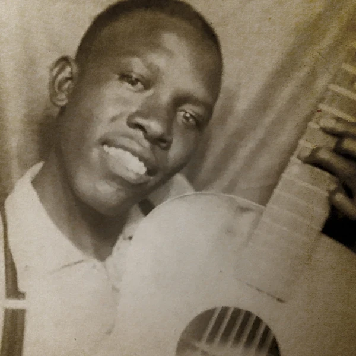
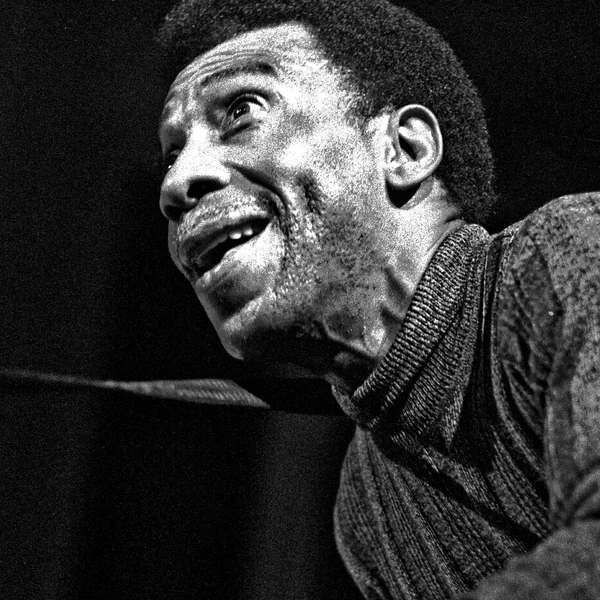
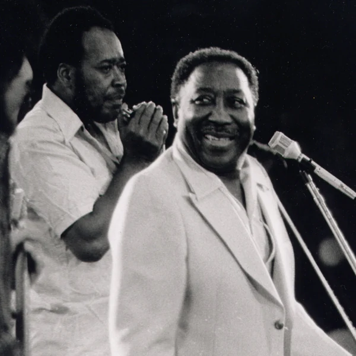
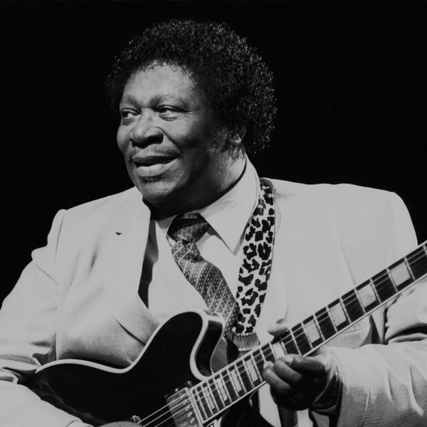

Blues is a musical tradition that developed among Black Americans in the southern United States around the end of the 19th century. It grew out of ways of singing and playing that were already familiar in everyday life, and it gradually became a recognisable form of popular music in its own right. Blues often centres on a singer or instrument expressing a short idea and then returning to it with a change in wording or melody. The music leaves room for performers to bend notes, alter the rhythm and make a familiar phrase sound personal. It can be played by one person with a guitar or by a full electric band, and the results do not necessarily have much in common beyond that approach. The name encourages people to expect sadness, but Blues can be funny, sharp, defiant or made for dancing. It also helped shape Jazz and Rock, although it has continued to develop as a genre rather than simply serving as somebody else's starting point.
People were talking about having the blues long before Blues was a musical genre. The expression is related to older phrases such as the blue devils, which referred to low spirits or feelings of trouble. By the 19th century, being blue or having the blues was a familiar way of describing someone's mood. Exactly when that language became attached to a particular kind of music is harder to pin down. By the early 20th century, Blues was appearing in the titles of published songs and soon became a convenient label for recordings. Not everything sold under the name sounded much like the music we would now recognise as Blues, which tells you something about how quickly the record business adopts a fashionable word. The meaning has stuck, even though it only describes one part of the music's character. Plenty of Blues performances are more likely to get people dancing than feeling sorry for themselves.
Blues emerged in the southern United States after emancipation, drawing on Black American musical practices that included field hollers, work songs and other forms of singing. Its early development was largely outside written music culture, so there is no reliable single birthplace or inventor to put at the beginning of the story. Performers carried different regional approaches between towns and communities, while audiences already knew many of the musical ideas from everyday life. In the early 20th century, printed music helped bring Blues into commercial entertainment, followed by recordings that reached listeners far beyond the South. The industry often marketed Black recordings separately, but the music itself travelled across those boundaries. The Great Migration helped establish Blues scenes in northern cities, where amplified instruments and larger groups suited crowded clubs. Those changes fed into Rhythm and Blues and Rock, while acoustic and regional Blues traditions carried on alongside them. The genre did not simply progress from one version to the next. Different kinds of Blues have remained in circulation because they serve different audiences and situations.
One familiar Blues pattern lasts twelve bars and follows a repeating series of chords, although it would be a mistake to assume every Blues performance follows it. Many earlier and regional styles use quite different structures. What often matters more is the way a musician handles a phrase. A singer might repeat a line before answering it, while a guitar or harmonica fills the space between vocal passages. Notes can be bent or sung between the pitches of a standard major scale, creating the distinctive inflections often called blue notes. Rhythm can be loose and conversational or firmly built around a shuffle that gives dancers something to follow. Musicians may improvise around an established pattern without losing the shape of the music. Blues lyrics are usually direct, but that does not make them simple. A familiar complaint can carry a joke or an insult, and sometimes the best response to a difficult situation is to turn it into a line everybody remembers.







Blues gave Black Americans a widely heard musical language for talking about work, relationships, migration and the conditions of everyday life. Some performances dealt directly with injustice, while others found humour or relief in subjects that were hardly cheerful to begin with. As the music became popular, it exposed a contradiction that would reappear throughout American popular culture. Black musicians helped create sounds that audiences across the country wanted to hear, but segregation and discriminatory business practices limited their opportunities and earnings. The recording industry even organised much of its catalogue around racial categories rather than musical differences. Blues nevertheless influenced successive generations of musicians and helped reshape the sound of popular music. Its reach should not be confused with equal recognition for the people who made it. The music often crossed racial boundaries more easily than its performers could, and debates about credit and ownership have followed it ever since.